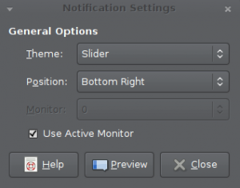
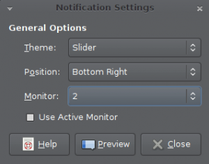

Changes to mate-notification-daemon
The mate-notification-daemon has a new feature in MATE 1.6 that allows
users to select which monitor they want to display notifications on. The
current behavior only displays notifications on the monitor which is currently
active (where the pointer is). The behavior will default to as it has always
been, but the user can change the settings by modifying the “use-active-monitor”
and “monitor-number” keys in via dconf-editor or they can run
mate-notification-properties and edit their settings via a GUI.
Below is a screenshot of mate-notification-properties set for notifications
to be displayed on an active monitor. Note that “Use Active Monitor” is selected,
which disables the combobox for selecting a monitor.

Below is a screenshot of mate-notification-properties set for notifications
to be displayed on a specific monitor. Note that “Use Active Monitor” is not
selected, which enables the combobox for selecting the monitor to be enabled.
The monitor number is set to 2. This will display on my third monitor, since
counting starts at 0 instead of 1.
